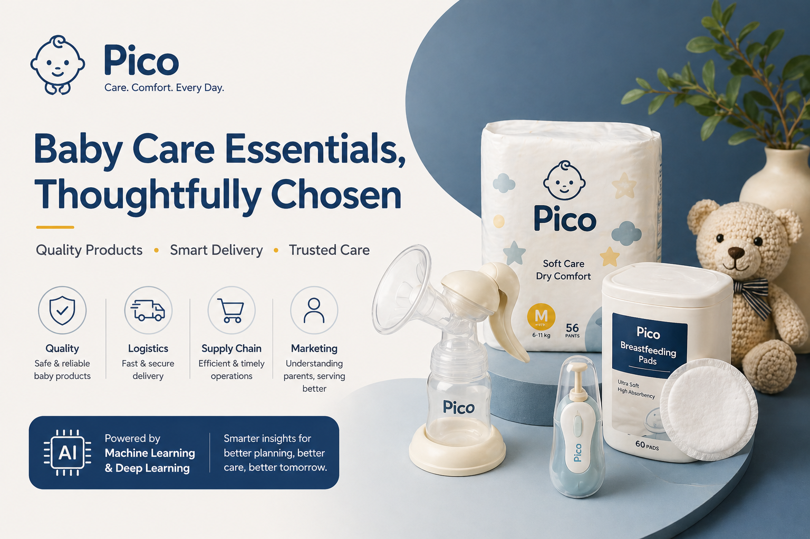
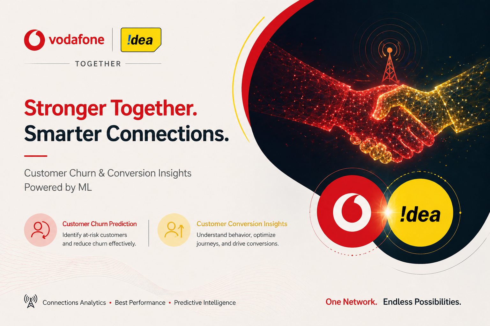
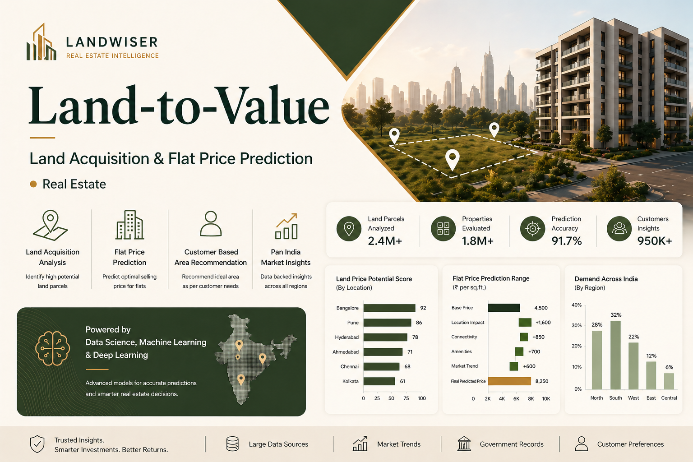

My Portfolio
Browse through my projects showcasing expertise in data analysis, machine learning, and visualization solutions for real-world problems in Varoius Setor

PayPal Product Dissection
Built a scalable SQL schema and ER model for PayPal with core entities like Users, Transactions, and Disputes.

Finance Dashboard
Designed a dashboard to track income, expenses, and savings using Excel and visualization tools.

HR Diversity & Inclusion Dashboard
Built a Power BI dashboard to analyze diversity, promotions, and employee turnover across departments.

PayPal Product Dissection
Built a scalable SQL schema and ER model for PayPal with core entities like Users, Transactions, and Disputes.

Finance Dashboard
Designed a dashboard to track income, expenses, and savings using Excel and visualization tools.

HR Diversity & Inclusion Dashboard
Built a Power BI dashboard to analyze diversity, promotions, and employee turnover across departments.